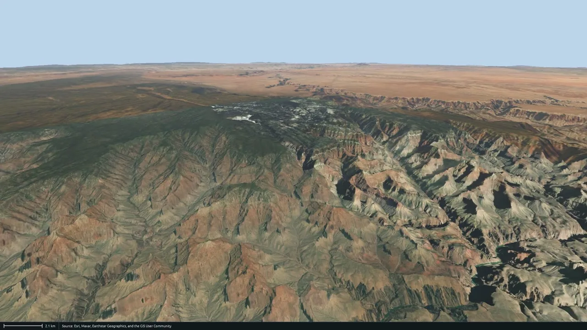
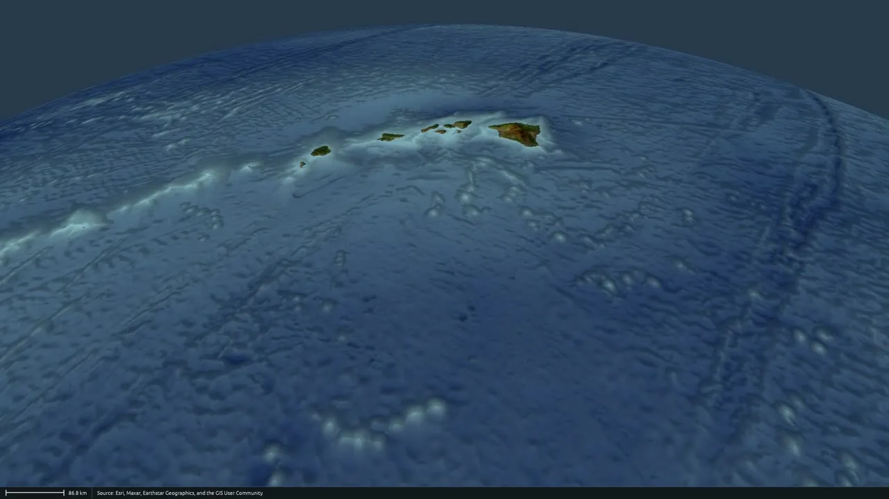
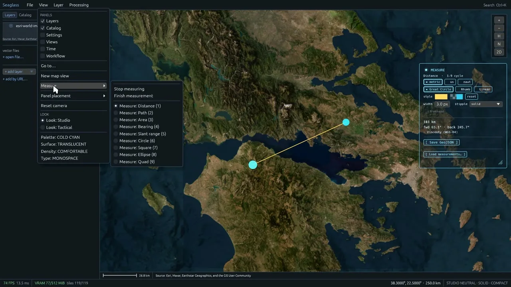
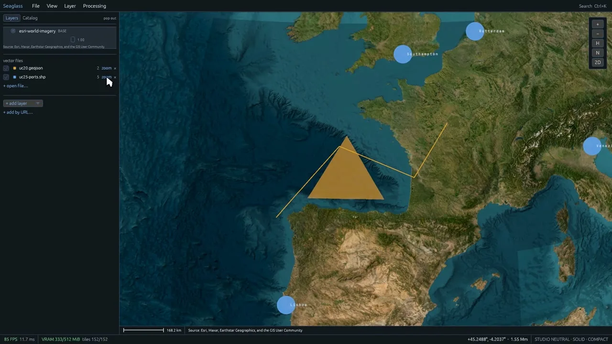
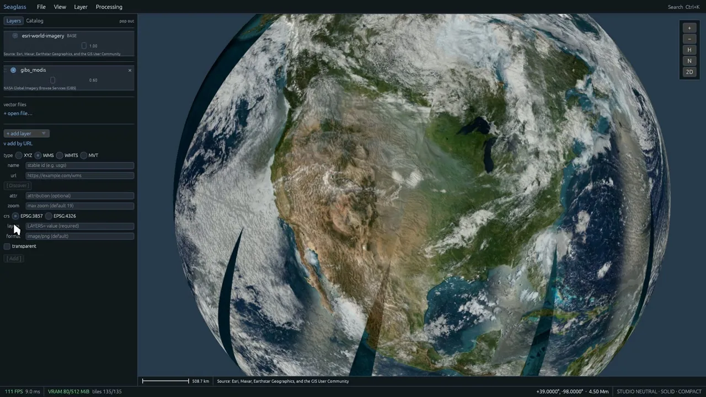
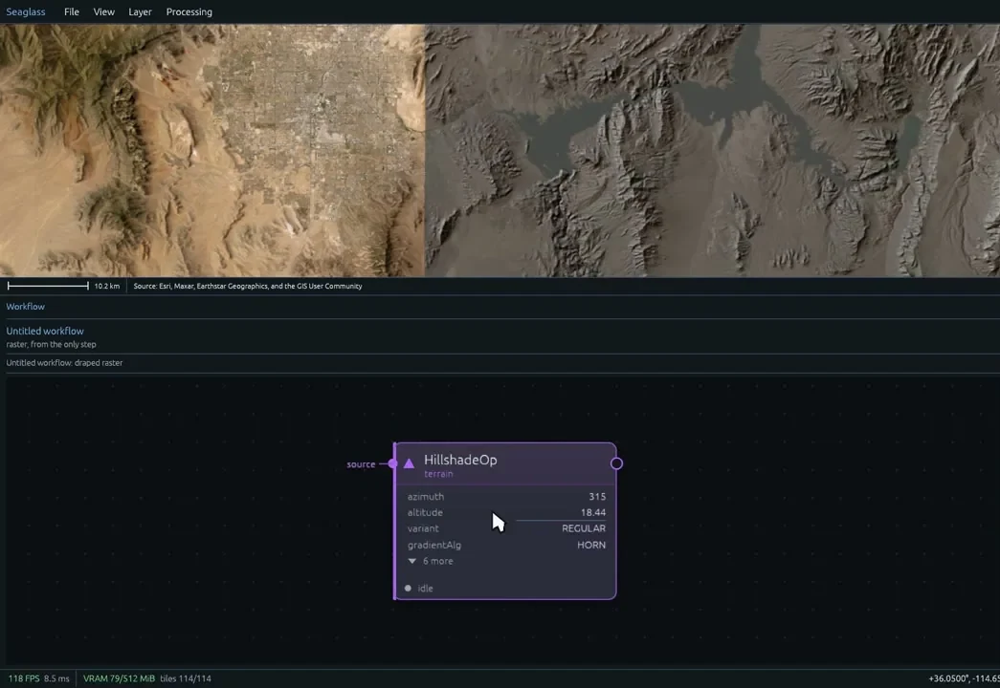
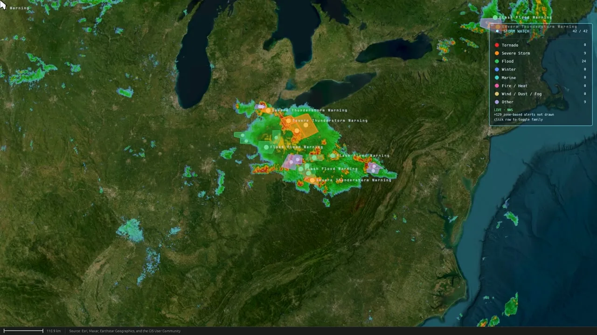
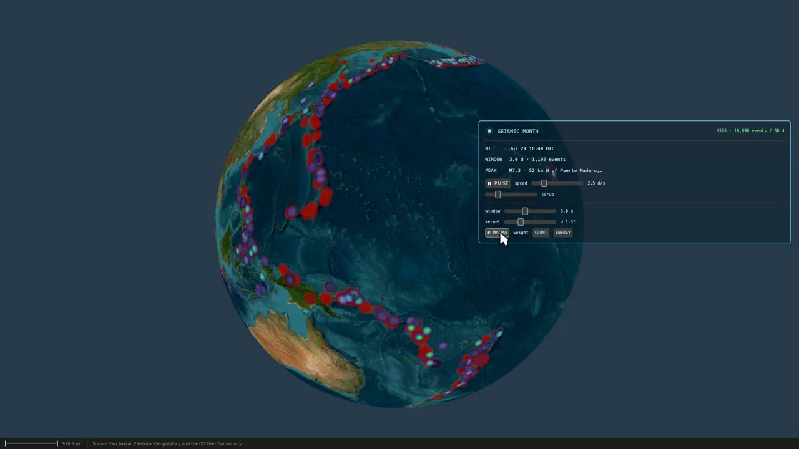
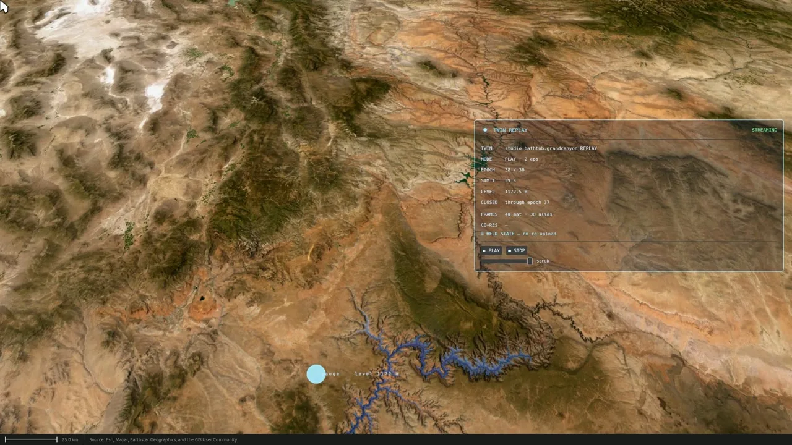

A WGS-84 ellipsoid, in double precision, all the way down
Twenty thousand kilometres to a rooftop, in one move — no cut, no dissolve, no swapping one scene for another — the same globe the whole way down. Real elevation, real imagery, real geodesy with the algorithm named beside every number, your own data on the stack, live feeds, and compute that runs where you are looking. The optional 3D view of the Forge suite, and the surface the agent draws on.
Seven acts, hard cuts between beats, and no cut inside the descent: the Earth, a real coordinate system, your data, compute on the globe, scale, the world live — with the digital twin as its last demonstration — and the close. Every panel, readout and credit strip on screen is the application's own, and every number a viewer could re-verify is one the render is displaying itself.
Recorded at 1920×1080/60 from the application itself. The recorder drives a virtual clock — the scene advances exactly 1/60 s per emitted frame — which is why the motion is unnaturally smooth. Nothing is composited over the footage except the title cards and the opening spec sheet.
The film opens on a spec sheet — this is it, minus a tool count — and the acts that follow are the evidence for it.
Naming WGS-84 is table stakes; printing its semi-major axis is the claim that you implemented it. The flat projections use that axis as a sphere radius — the ellipsoid is in the geodesy and the measure tool, not the map projections.
Three short answers for the technical evaluator.
Seaglass Globe is a precision virtual globe: a WGS-84 ellipsoid held in double precision and rendered on the GPU through Rust and wgpu, with real elevation above and below the waterline, real imagery, and geodesy that names its algorithm. It is the Forge suite's optional 3D view — install it with the Seaglass Control Center™ and it starts alongside the engines.
The engines are headless, and ForgeGIS Studio™ is where a person operates them on a flat map — but some answers want the Earth. When the Globe is running it is the agent's presentation surface: ForgeMind™'s visual answers — contours, elevation profiles, draped rasters, scene entities — are drawn on the globe instead of only described. It has its own chat panel too, talking to the same agent.
The numbers on screen are the render's own: precision held relative to the camera so a rooftop does not shimmer, a measurement that prints its method, a spec sheet with a semi-major axis on it. It reads what you already have — GeoJSON, KML, shapefiles, any tile service you can name — runs the suite's GPU compute engine, ForgeGIS™, from a workflow editor docked under the map, and can be flown by software over MCP.
Beyond the film — the operator workstation, the compute surface and the agent surface, as documented in the Technical Brief.
A docked workstation: Layers and Catalog on the left; Settings and Views on the right, joined by
Entities, Assistant and Reports under the suite. Every panel docks in any region or tears off into
its own operating-system window. A command palette (Ctrl+K) lists everything the
application can do; Go to (Ctrl+G) searches your data. Four look axes —
palette, surface, density, type — with Studio and Tactical presets. A project is a working
directory: layers, view, panels, saved views, settings and workflows are small files written on
change, so there is no Save.
Nine measure modes — distance, path, area, bearing, slant range, circle, square, ellipse, quad — with the method named beside the number: Vincenty's inverse for distance and azimuth, Karney's for area, on the WGS-84 ellipsoid. Metric, US or nautical units switch live; paths run geodesic, rhumb or linear; freehand tracing; measurements save and load as GeoJSON. The cursor readout cycles decimal degrees, DMS, UTM and MGRS.
GeoJSON, KML/KMZ and three-file shapefiles with their attributes; XYZ, WMS 1.3.0, WMTS 1.0.0 and MVT sources added by URL, with a Discover step that reads a WMS or WMTS server's capabilities; glTF/GLB models and 3D Tiles. The layer stack reorders, hides, fades and promotes any layer to base, and persists between launches; click any feature and its attributes come back.
The Workflow editor is a node canvas over a real graph of ForgeGIS operations: drag ports to wire, pick up an edge to fork, add steps from a menu grouped by the engine's own categories. Every parameter gets a control built from the engine's schema; drag a number on a card and the result re-computes and re-drapes as you drag — on a branching document only the downstream part re-runs. Batch runs the chain over a folder; Contours draws labelled lines from the source; right-click the terrain and load DEM here fetches the best elevation data covering that point.
The Catalog panel browses what ForgeData™ knows about; one click drapes a raster and makes it the workflow's source. Draw a point, line or polygon and name it: it is a scene entity of the same kind the agent places, listed beside them, referenceable by name in chat, and — when the catalog is up — written through so it survives a restart with the same id. The Assistant panel is the conversation with ForgeMind; Reports show what it wrote.
One MCP endpoint on the running application — POST /mcp on loopback,
bearer-protected in the suite — for camera, layers, projection, scene entities, reports,
raster overlays and the full compute bridge: ForgeGIS operations, pipelines and batch; ForgeData
catalog, elevation and publish. Clients attach to a running globe rather than launching one;
compute tools return queued and the result lands on the globe a moment later; every
object result also travels as structuredContent.
| At a glance | Seaglass Globe 1.2.4 |
|---|---|
| Data in | XYZ · WMS 1.3.0 · WMTS 1.0.0 · MVT · 3D Tiles · glTF 2.0/GLB · Terrarium elevation · GeoJSON · KML 2.2/KMZ · Esri Shapefile (+DBF); the tile cache serves visited regions without a network |
| Projections | WGS-84 globe; five spherical flat views — equirectangular, Mercator, sinusoidal, orthographic, polar stereographic; independent map-view windows |
| Coordinates & measure | DD · DMS · UTM · MGRS readouts; nine measure modes; Vincenty inverse and Karney area on the ellipsoid; metric, US, nautical; GeoJSON round-trip |
| Compute | ForgeGIS operations, chains and graphs from a node-graph editor with live parameter scrubbing, batch, contours and load-DEM-here; ForgeData catalog, extraction, elevation and publish; results draped, drawn as entities, or reported |
| Agent surface | POST /mcp on 127.0.0.1:7900 (configurable), MCP Streamable HTTP, bearer-authenticated per install; ForgeMind on 8080; engines over stdio |
| Digital twin | Spec D wire client; Spec E shared-VRAM co-residency — opt-in, Vulkan-pinned, wire-only fallback |
| Platform | Windows x64 with a real GPU (Vulkan or DirectX 12 as wgpu selects); 8 GB RAM for the suite with the Globe installed; ~4 GB disk for a tile cache that grows with use |
The founding claim, and the one nothing else in the film makes: the same globe, at every altitude.


Twenty thousand kilometres to a rooftop, in one move. No cut, no dissolve, no swapping one scene for another — the same globe the whole way down. Precision is held relative to the camera, so the ground stops shimmering exactly where a single-precision engine starts to.
Terrain doesn't stop at the waterline. Below it, the depth tint is reading the same elevation data as the mountains above — the ridge, the seamounts, the abyssal plain, in relief.
Eighteen hundred metres of relief across sixteen kilometres, lit by the real sun at the real hour. The shading is not painted on: it is the light, the terrain, and the time of day.
A number without its method is not a measurement. Every measurement on the globe names the algorithm that produced it.

Two clicks on open water. Distance, forward azimuth, back azimuth — and the name of the algorithm that computed them: Vincenty's inverse solution, on the WGS-84 ellipsoid. Close a polygon and the method changes with the question. Area is Karney's, on the same ellipsoid.
Decimal degrees, degrees-minutes-seconds, UTM, and the military grid reference the last one is built from — the status-bar readout re-forms each time. New York to Los Angeles bows north on the flat map, because on an ellipsoid that is the short way; the engine draws the geodesic, not the line that looks straight.
Globe plus five flat projections, switched live. Flatten it and the projection changes what you see without changing what is underneath; right-click the same screen position in each and it tells you where on the Earth that is. Come back to the globe and the camera never moved. The flat views are spherical projections — the ellipsoid lives in the geodesy and the measure tool.
Bring your own files and your own services. The layer stack is yours, and it survives the next launch.

uc20.geojson and uc25-ports.shp — drawn over the base imagery of western Europe: an orange filled triangle and a yellow line over the Bay of Biscay, blue circle markers labelled Rotterdam, Southampton and Lisboa, and the Layers rail listing both files with their zoom and remove controls.
gibs_modis, opacity 0.60) draped over the base imagery: North America under that day's real cloud. The dark curved wedges are not missing tiles — they are the gaps between passes of a polar-orbiting instrument's one-day swath. On the left, the add-by-URL form that fetched it: XYZ / WMS / WMTS / MVT and the CRS choice.A map is a stack, and the stack is yours. Drag one layer over another and the order is the order they draw in. Pull the opacity down and the layer beneath comes through. Hide it, and it is still there. The arrangement survives the next launch.
Bring your own data. GeoJSON, KML, shapefiles — the three-file kind, read as one layer. Click a feature and the attributes come back: the same table that was in the file, not a summary of it.
Any tile service you can name — XYZ, WMS, WMTS, MVT. Point it at a standards server and it asks what that server has, then draws the layer you pick straight over the base imagery. The gaps are real: that is one day of a polar orbit, and where two passes did not meet, nobody took a picture.
The suite's GPU compute engine, run from a workflow editor docked under the map — and re-run while you are still holding the slider.

HillshadeOp card — azimuth 315, altitude 18.44, variant REGULAR, gradient HORN — with the pointer on the altitude row, and the hillshade draped over the basin in the map band above (Las Vegas at the left, Lake Mead at the centre). The right-hand rail carries the same step, its source raster, the auto: hillshade colour ramp, and a contour-interval field.Point at the ground and ask what elevation data exists there. It ranks what it can reach, cuts the window you asked for, and hands you a document with that file already set as its source — named, with its resolution, so “best available” is checkable rather than claimed.
Then type a number. Two hundred and fifty metres — a real interval against real elevation, and the labels are the elevations, not decoration.
Now change your mind. Drag the sun's altitude and the shading re-computes and re-drapes while you are still holding it — that is the engine running, the result coming back, and the globe re-texturing, for a value you have not let go of.
Take an edge off, feed the same output into two branches, and it stops being a chain — so it runs as a graph.
It does not have to be a file. Three feeds that are live — and two that are not, kept apart under their own cards.


Earthquakes as reported, sized by magnitude and coloured by how deep they were. Severe-weather warnings as the Weather Service issued them, over the radar that produced them. Ships under way, reporting themselves. Each shows whatever its feed says the day you run it.
A month of earthquakes, and every one of them measured. Thirty days of the USGS catalogue, replayed as a moving window — real data, replayed; not synthetic, and not live seismicity.
A whole catalogue of orbits, propagated from real elements by SGP4 — and sorted, so you can take a whole shell out of the sky and put it back. The catalogue is cached and the propagation is genuine — propagated, not live, and the narration says so.
The last demonstration in the film: a modelled flood, streaming from a ForgeGIS digital twin straight into shared video memory.

studio.bathtub.grandcanyon replay at epoch 38 of 38, the water drawn in blue along the canyon at level 1 172.5 m with a gauge marker labelled level 1172 m, and the TWIN REPLAY panel reading STREAMING, PLAY · 2 eps, and CO-RES ≡ HELD STATE — no re-upload.A hydraulic model — not a real event — replayed over a wire at an accelerated pace, straight into shared video memory. The Globe is the remote consumer of the twin's published wire contract: it never embeds the engine, and it renders live and replayed runs the same way, because a replay is indistinguishable from live by design.
In co-resident mode — on a large-VRAM workstation, and off by default — the adapter is pinned to Vulkan so the twin's memory can be imported rather than copied: the globe samples it where it already sits. Meaning and the durable record still travel the normal path.
Optional, opt-in, and the agent's presentation surface. Everything runs locally: the Globe's API, like the agent's, is bound to loopback and protected by a per-install token.
When it's running, answers that produce something visual — contours, elevation profiles, draped rasters, scene entities — get drawn on the globe instead of only described. Ask the agent from the Control Center, from Studio, or from the Globe's own chat panel; it is the same agent either way.
Start suite launches the Globe first, so the agent adopts it as its drawing surface, then ForgeMind — which spawns ForgeGIS and ForgeData™ as tool servers — then Studio. Start the Globe after ForgeMind and you restart ForgeMind: it picks its drawing surface at launch.
A hardware-accelerated globe you can fly around — and an RDP or remote-desktop session usually can't drive it. Leave the window open and unminimized while the agent works: minimized, it stops rendering and drawing requests time out.
| Component | Role | Port |
|---|---|---|
| ForgeMind | Agent orchestrator (HTTP + MCP host); spawns the others | 8080 loopback |
| ForgeGIS | GPU geospatial compute engine (MCP stdio child) | stdio |
| ForgeData | Dataset catalog + ingesters (MCP stdio child) | stdio |
| ForgeGIS Studio (opt-in) | Web workspace for building and running pipelines | 8081 loopback |
| Seaglass Globe (opt-in) | The 3D view and the agent's presentation surface; runs its own copy of the GIS engines | 7900 loopback + bearer |
The suite wants 8 GB of RAM with the Globe installed (4 GB without) — it runs its own copy of the GIS engines, and the Control Center caps each service's heap from your machine's RAM and re-plans it when the Globe is installed.
All Seaglass Globe collateral, v1.2.4. Direct download — no email gate, no form wall.
A capability reference written from the repository: architecture and precision, rendering, navigation, geodesy and the measure tool, projections, providers and the layer stack, vector data, 3D content, live feeds, the workflow editor and compute, the catalog, entities, the MCP surface, the digital twin, export, projects, the shell — then measured performance, security posture, deployment, and what is deliberately not claimed.
Download PDFFront/back overview: twenty thousand kilometres to a rooftop, f64 all the way down, the WGS-84 ellipsoid with its semi-major axis printed; who it is for, what is on screen, the live feeds and the two that are not, and what it reads.
Download PDFA real coordinate system behind a loopback-only boundary: MGRS and UTM from one cursor, geodesy an evaluator can check, the compute engines contained under a path sandbox, two bearer tokens, a zero-copy digital twin, and the deployment footprint.
Download PDFThe agent's presentation surface: one loopback MCP endpoint, attach-don't-spawn, results that land on the globe by shape, named answers that survive a restart, fire-and-queue by design, and the read-back gaps stated.
Download PDFThe Globe is an opt-in component of the Forge suite and is not sold separately; see the licensing note above.
Attribution is burned into every frame of the film and every still on this page — never covered, never cropped. In legible form:
Imagery: © OpenStreetMap contributors · Esri, Maxar, Earthstar Geographics, and the GIS User Community · © CARTO · Mapzen Terrain Tiles, hosted by AWS Open Data · NASA Earth Observatory · NASA GIBS.
Data: USGS · NOAA/NWS · Iowa Environmental Mesonet NEXRAD · Digitraffic (Finnish Transport Infrastructure Agency) · CelesTrak.
Type in the application: JetBrains Mono, SIL Open Font License 1.1.
Run the whole suite on one Windows x64 workstation with a real GPU, and watch the agent draw its answers on the globe. Seaglass Foundry™ reads every email.
rich@seaglassfoundry.com